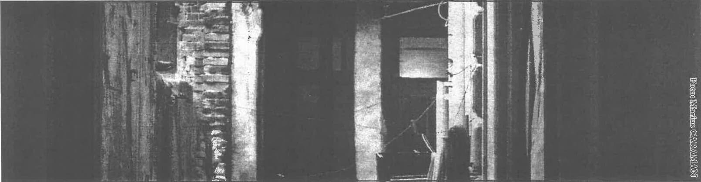

„Și era acolo [la scăldătoare Vitezda] un om bolnav de treizeci și opt de ani. Iisus, văzîndu-l pe acesta zăcînd și știind că este așa încă de multă vreme, i-a zis: Voiești să te faci sănătos? Bolnavul I-a răspuns: Doamne, nu am om care să mă arunce în scăldătoare cînd se tulbură apa; căci, pînă cînd vin eu, altul se coboară înaintea mea” (Ioan 5:5-7).
Eram unul dintre acei nenumărați orășeni cărturari – fățarnici, înșelați și rău-voitori – iar în timp am ajuns să locuiesc chiar în mănăstire și apoi să-mi construiesc casă în apropiere, drept în pădure. Și aceasta s-a datorat unor oameni trimiși de Dumnezeu: mai întîi, monahului Filoteu Bălan, iar apoi Starețului Iustin Pîrvu. Și a fost așa: după treizeci și ceva de ani în care trăisem într-un curat ateism și în nenumărate alte patimi sufletești și trupești, am simțit un dor fără nume după Cineva, adică după o Persoană necunoscută și tainică. Nu știam Cine e, dar tot El avea să-mi trimită om care să mă îndrume. Acesta era un foarte tînăr prieten, care, după un colegiu de informatică, se călugărise pe neașteptate la Sihăstria. El m-a dus la spovedanie (prima oară în viață), la părintele Ioaniche Bălan. De atunci, viețuirea mea avea să se schimbe tot mai mult, pe neștiute, ca urmare a tainei spovedaniei, al doilea botez, cum se zice. Încet-încet, am ajuns să mă rog după pravilă, să merg la biserică nesmintit, să postesc, măcar că nu știusem de acestea cu puțin înainte. Și încă ceva, deosebit de însemnat: am moștenit cîteva sute de cărți de la acel frate al meu de la Sihăstria, Filoteu, care voia să plece la Sfîntul Munte (el n-a mai ajuns acolo, dar cărțile mi-au rămas). Odată ce le-am primit, n-am mai putut citi nimic din cărțile mele (aveam și avusesem mii de volume în casă, eram cititor „de profesie” de aproape treizeci de ani), ci numai scrierile dreptei-credințe. De mirare era că – din aceste scrieri teologice, noi pentru mine (unele deosebit de grele: Filocalia, Dogmatica Sfîntului Ioan Damaschinul, Marele cuvînt catehetic al Sfîntului Grigorie de Nissa) – înțelegeam tot și nu mă îndoiam de nimic. Darul priceperii, dat la botez de către Sfîntul Duh lucra acum în mine, după ce îl oprisem atîta vreme să o facă prin viețuirea mea păcătoasă, patima cea mai de căpătîi a mea fiind necredința. Apoi, la o vreme, am început să înțeleg „lumea”, cu care nu fusesem niciodată prea prieten, dar în care puteam totuși trăi, fiind lipit de ea tocmai prin legăturile patimilor. Acum însă, într-o bună zi, am simțit cu toată tăria că nu mai pot urma să viețuiesc nicidecum în „lume”. Dar unde să mă duc eu, bucureștean care nu ieșisem din oraș mai deloc? Răspunsul a venit tot de la fratele Filoteu, care mi-a spus că noul lui stareț (se mutase de la Sihăstria) de la o oarecare mănăstire cu hramul Sfinților Arhangheli, din apropierea satului Petru Vodă, voia să înființeze o școală creștină. De aprobări se ocupase un frate al nostru, iar construcția fusese începută de un părintele Ioan la schitul de maici al mănăstirii. Mai era nevoie de cineva care să construiască o casă pentru profesorii care urmau să vină și de un director. M-am hotărît pe loc și, peste nu mult timp, am ajuns la mănăstire și am vorbit cu părintele stareț, spunîndu-i că mă pot ocupa și de construcție, și de organizarea școlii. Fără să chibzuiesc deloc, știam că așa va fi, fără nici o îndoială. Iar părintele nu a zis decît atît: Bine, deci rămîi? Aveam de lămurit cîteva lucruri la oraș, așa că am amînat. Atunci cînd poți veni, peste o lună (eram în ianuarie)? – m-a întrebat el. Nu! Peste două? Nu! Peste trei? Nu! În patru luni poți veni? Nu, dar peste cinci luni sînt aici! Și așa a fost. Am lăsat totul – casă, soție, copii – și am plecat doar cu ceva îmbrăcăminte.
Povestesc toate acestea cu un singur scop: pentru a arăta cum un neputincios ca mine (și numai eu știu cît de neputincios!) capătă o nebănuită întărire de la Dumnezeu atunci cînd are bunăvoința să urmeze măcar într-o mică măsură îndemnurile Mîntuitorului, începînd cu acela de a se lepăda de lume. Și nu numai de „lume”, dar și de cei apropiați care judecă cele ale lumii: de părinți, de prieteni, de femeie și de copii. Această despărțire, fie și vremelnică, este deosebit de dureroasă, însă aduce după sine ca răsplată o mîngîiere cu mult mai mare. Căci să citim ce întreabă despre aceasta Petru și ce-i răspunde Mîntuitorul:
„Atunci, Petru I-a zis: «Iată noi am lăsat toate și Ți-am urmat Ție. Cu noi oare ce va fi?» Iar Iisus le-a zis: «Adevărat zic vouă că voi, cei ce Mi-ați urmat Mie, la înnoirea lumii, cînd Fiul Omului va ședea pe tronul slavei Sale, veți ședea și voi pe douăsprezece tronuri, judecînd cele douăsprezece seminții ale lui Israil. Și oricine a lăsat case sau frați, sau surori, sau tată, sau mamă, sau femeie, sau copii sau țarine pentru numele Meu înmulțit va lua înapoi și va moșteni viața veșnică. Și mulți dintîi vor fi pe urmă, și cei de pe urmă vor fi întîi»” (Matei 27-30).
Pînă la bunătățile cele veșnice însă, de pe urma lepădării de lume și de cei apropiați care cugetă cele ale lumii se cîștigă altceva acum și aici, un lucru negrăit de prețios: întărirea în credință, înțelegerea rostului acestei vieți și, ca urmare, liniște în fața necazurilor și scîrbelor de fiecare zi; într-un cuvînt, se cîștigă libertatea cea adevărată, pierdută odată cu călcarea de poruncă a lui Adam, libertate pe care numai noul Adam Hristos ne-o poate da înapoi, dacă ne străduim să-I urmăm pilda, fie și după măsura nevredniciei noastre.
Și, ca să mă întorc la părintele Iustin, mă întreb ce drum aș fi urmat dacă nu l-aș fi cunoscut? Cine altul m-ar fi îngăduit așa cum a făcut-o el? Cine m-ar fi găzduit, fără să-mi ceară socoteală de ceea ce fac? Cine mi-ar fi dat toate cele de trebuință, așteptînd să mă pregătesc pentru o nouă viață, cu totul deosebită de cea dinainte? Nimeni altul! – o spun cu toată încredințarea. După știința mea, părintele stareț este singurul în Ortodoxia noastră care vrea și poate să schimbe cu totul chipul viețuirii cuiva, dacă și acela dorește aceasta, bineînțeles (fragment din cartea Justin).
Firește, pilda desăvîrșită a întoarcerii de la minciună, întuneric și moarte (anume de la diavolul) către Adevăr, Lumină și Viață (către Hristos-Dumnezeu adică) este înfricoșata întîmplare a tînărului rabbi Saul din Tars, aflat pe drumul către Damasc. Să o recitim împreună cu tîlcuirea Sfîntului Ioan Gură de Aur (în cartea lui Teofilact al Bulgariei):
(1) Iar Saul, suflînd încă îngrozire și ucidere împotriva ucenicilor Domnului, a mers la arhiereu (2) și a cerut de la el scrisori către sinagogile din Damasc ca, dacă va afla acolo pe vreunii – atît bărbați, cît și muieri – că merg pe calea aceasta, să-i aducă legați la Ierusalim.
Aici, tîlcuiește turbarea lui Pavel asupra bisericilor credincioșilor, arătînd că aceasta se trăgea din rîvna și osîrdia lui celei fierbinți [pentru Lege]. Căci se împlinea la dînsul cuvîntul zis de Hristos, anume că: „Celor ce vă vor ucide pe voi li se va părea că aduc slujbă lui Dumnezeu!” (Ioan 16:2). Fiindcă Saul nu făcea aceasta precum ceilalți Iudei, să nu fie! Și că așa este se vede arătat și din faptul că se ducea chiar în [sinagogile din] cetățile din afară [neevreiești, n. m.], iar aceia [arhiereii și cărturarii] nici de cei ce erau în Ierusalim [în biserica veche] nu ar fi grijit. Căci ei purtau grijă numai de una, să dobîndească cinste. Și se duce în Damasc, căci era cetate mare, împărătească, și se temea ca nu cumva aceasta să fie cuprinsă de propovăduirea evangheliei. Și nu merge la stăpînitor să ceară scrisori, ci la arhiereu, căci grija lui era ca pe toate să le săvîrșească după Lege.
„(…) ca, dacă va afla acolo pe vreunii – atît bărbați, cît și muieri – că merg pe calea aceasta, să-i aducă legați la Ierusalim.”/ Ce este „pe calea aceasta”? Poate că așa vorbeau despre sine-și credincioșii, pentru că numai a lor era credința prin care ne ducem la ceruri. Sau Pavel îi numea atunci pe dînșii „din calea aceasta” ca și cum netrebnicindu-i și batjocorindu-i. Căci se obișnuiește a-l numi „din cale”, adică de pe drum, pe cel ne-cinstit. Și n-a cerut stăpînire ca să-i muncească acolo, ci să-i aducă în Ierusalim, căci voia să facă acest lucru cu mai multă stăpînire.
(3) Dar, pe cînd călătorea el și se apropia de Damasc, fără de veste a strălucit peste el lumină din cer. (4) Și, căzînd la pămînt, a auzit un glas, zicîndu-i: „Saule, Saule, de ce Mă gonești?” (5) Iar el a zis: „Cine ești Tu, Doamne?” Și Domnul a zis: „Eu sînt Iisus, pe Care tu Îl gonești. Greu îți este să izbești cu piciorul împotriva boldurilor1!” (6) Și el, tremurînd și înspăimîntat fiind, a zis: „Doamne, ce voiești să fac?” Iar Domnul i-a zis: „Scoală-te, intră în cetate și ți se va spune ce trebuie să faci.” (7) Iar bărbații care erau cu el pe cale stăteau încremeniți, auzind glasul, dar nevăzînd pe nimeni. (8) Și s-a ridicat Saul de la pămînt, dar, deși avea ochii deschiși, nu vedea nimic. Și, luîndu-l de mînă, l-au dus în Damasc. (9) Și trei zile a fost nevăzînd; și n-a mîncat, nici n-a băut.
Vedenia nu se face în cetate, ci pe cale, în liniște, căci cei mulți nu ar fi crezut, ci încă l-ar fi și batjocorit. Fiindcă și acolo, auzind glasul, cei împreună cu el ziceau că este tunet. Iar el era vrednic de credință dacă le vestea el însuși pe ale sale. Deci nu în Ierusalim, nici în Damasc, ci pe cale strălucește peste el lumina, ca lucrul făcut împrejurul lui să nu poată fi povestit într-alt fel de ceilalți, ci să fie vrednic de credință a-l povesti el, cel care și vedenia a văzut-o, și patima [orbirii] a pătimit-o. Căci aceasta o va zice și răspunzînd către Agrippa.2
„Saule, Saule, de ce Mă gonești?”/ Hristos nu-i zice: Crede! – ci îi cere socoteală, zicînd: „De ce mă gonești?” Numai că nu-i zice: Pentru ce nedreptate, mică sau mare, pătimită de la Mine Îmi faci acestea?
„Eu sînt Iisus, pe Care tu Îl gonești.”/ Aceasta e în loc de: Să nu socotești că războiul tău este împotriva oamenilor, ci împotriva Mea, a Domnului Tău. Dar pentru ce nu s-a făcut acest lucru [întoarcerea lui Pavel] dintru început? Ca să se arate că Hristos a înviat cu adevărat. Căci cel ce îl gonea pe Dînsul, și nu credea învierii Lui, și cu atîta nebunie îi gonea pe cei credincioși, de unde ar fi crezut, dacă nu ar fi fost multa și marea putere a învierii? Dar pentru ce [nu i S-a arătat] îndată după înviere? Ca mai luminat să se arate războiul împotriva învierii și mai dumnezeiască întoarcerea lui Pavel.
„Iar bărbații care erau cu el pe cale stăteau încremeniți, auzind glasul, dar nevăzînd pe nimeni.”/ Și peste cei împreună cu dînsul stălucește lumina, ca să mărturisească vedenia. Dar nu îi orbește, decît numai pe Pavel, ca să nu se creadă că patima a fost a oricăruia și din întîmplare, ci să se arate că e cu adevărat a dumnezeieștii lucrări și purtări de grijă. Dar pentru ce nu au crezut și cei împreună cu dînsul? Ca să fie vrednici de crezare cînd vor mărturisi lucrul întîmplat împrejurul lui Pavel. Căci, de ar fi crezut, ar fi părut că mărturisesc din dar. Dar al cui glas l-au auzit cei ce erau cu Pavel? Al lui Pavel, celui ce răspundea, iar pe cel ceresc l-a auzit doar el. Pentru aceasta zice aici că bărbații care erau cu el pe cale stăteau, auzind glasul lui Pavel, dar nevăzînd „pe nimeni”, adică pe cel căruia îi răspundea. Și, după acestea, însuși Pavel zice: „Cei ce erau împreună cu mine au văzut lumina și s-au înfricoșat, dar glasul Celui ce-mi grăia nu l-au auzit.”3
„(…) dar, deși avea ochii deschiși, nu vedea nimic”/ Vederile lui Pavel pătimesc, căci covîrșirea luminii obișnuiește să le răpească, fiindcă și ochii au măsuri. Și se zice că și covîrșirea glasului asurzește și amorțește.4 „Și trei zile a fost nevăzînd; și n-a mîncat, nici n-a băut.”/ Pentru ce a făcut aceasta? Pentru că foarte se osîndea pe sine-și, și se căia, și era întristat și mîhnit pentru goana Bisericii, și se ruga și-L chema pe Dumnezeu ca să i se ierte lui greșeala.
(10) Și era în Damasc un ucenic, anume Anania, și Domnul i-a zis în vedenie: „Anania!” Iar el a zis: „Iată-mă, Doamne!” (11) Și Domnul a zis către el: „Sculîndu-te, mergi pe ulița care se cheamă «Ulița Dreaptă» și caută-l în casa lui Iuda pe Saul, zis «Tarsianul». Căci iată, se roagă. (12) Și a văzut în vedenie pe un bărbat cu numele «Anania» intrînd la el și punîndu-și mîinile peste el, ca să vadă iarăși.” (13) Și a răspuns Anania: „Doamne, despre bărbatul acesta am auzit de la mulți cîte rele a făcut sfinților Tăi în Ierusalim. (14) Și aici are putere de la arhierei să-i lege pe toți care cheamă numele Tău.” (15) Și a zis Domnul către el: „Mergi, fiindcă acesta Îmi este vas ales, ca să poarte numele Meu înaintea «neamurilor» și a împăraților și a fiilor lui Israil. (16) Căci Eu îi voi arăta cîte trebuie să pătimească el pentru numele Meu.”
Pentru ce i se încredințează învățătura credinței și tămăduirea lui Pavel, celui ce atît de mare avea să fie, lui Anania, care nu era dintre ucenicii lăudați și vestiți? Pentru că Pavel nu avea să fie povățuit prin oameni, ci prin Însuși Hristos; căci Anania l-a botezat și l-a vindecat, dar nu l-a învățat nimic. Iar că Anania nu era dintre cei foarte vestiți se vede din temerea și frica ce se arată din graiurile lui. Căci atît tremura de goana lui Pavel, cît numai auzind de la Domnul de numele lui s-a spăimîntat și s-a înfricoșat, și nu lua aminte nici la cele ce se ziceau de Domnul: anume că Pavel se roagă, că a văzut în vedenie că el [Anania] e trimis către dînsul ca făcător de bine și mîntuitor, fiindcă este orb.
„Și a văzut în vedenie pe un bărbat cu numele Anania (…)”/ Căci nu putea să vadă aievea, în chip descoperit, fiind orb.
„(…) și aici are putere de la arhierei să-i lege pe toți care cheamă numele Tău.”/ De unde le era arătată lor aceasta? E cu putință ca, în frică fiind, ei să fi iscodit și să se fi înștiințat cele hotărîte asupra lor. Și vezi cîtă este frica, pentru că nici numele acesta, „Saul”, nu sufereau să-l audă, mai-nainte de a-l vedea [pe dînsul]. Și zice Anania: Mă tem ca nu cumva și pe mine să mă ducă la Ierusalim.
„Mergi, fiindcă acesta Îmi este vas ales, ca să poarte numele Meu înaintea «neamurilor» și a împăraților și a fiilor lui Israil.”/ Va fi – zice – nu numai credincios, ci și dascăl. Și multă îndrăzneală va avea înaintea „neamurilor”, și a împăraților și va sta împotriva Iudeilor. Și, prin acestea, îl face îndrăzneț pe Anania, dar totodată îl și înfruntă. Căci zice: Dacă acela care a fost atît de turbat, și de înnebunit și de ucigaș, pe toate le va pătimi pentru Mine, tu nici să-l botezi nu voiești?! Și de aceea zice: „Fiindcă acesta Îmi este vas ales, ca să poarte numele Meu.” Căci Anania, auzind că Pavel era orb, s-a bucurat și numai că nu a zis și cu graiul aceasta: Bine este! Lasă-l pe dînsul să orbească, ce-mi poruncești mie să-i deschid ochii?! Ca iarăși să ne lege și să ne muncească? Nu numai că nici un rău nu va face – zice Domnul – dar va și pătimi multe pentru Mine. Și bine a zis: „vas al alegerii”, cuvîntul acesta arătînd că răutatea nu este firească, pentru că ce este bun și lămurit [„curat”, n. m.] alegem.5
(17) Și a mers Anania, și a intrat în casă și, punîndu-și mîinile pe el, a zis: „Frate Saul, Domnul Iisus, Cel ce ți S-a arătat pe calea pe care veneai, m-a trimis ca să vezi iarăși și să te umpli de Duh Sfînt.” (18) Și îndată au căzut de pe ochii lui ca niște solzi; și a văzut iarăși și, sculîndu-se, a fost botezat. (19) Și, luînd mîncare, s-a întărit. Și a stat Saul cu ucenicii din Damasc cîteva zile.
Vezi că, trecîndu-i frica, ascultarea lui e mai mare? Căci graiurile Ananiei nu erau de necredincios, ci de om temător care tremură.
„Frate Saul, Domnul Iisus, Cel ce ți S-a arătat pe calea pe care veneai, m-a trimis (…)”/ Rostind numele Domnului, îl împrietenește îndată. Dar Hristos nu îi zisese că Se arătase lui Saul, ci [Anania] s-a învățat de la Duhul. Și nu i Se arătase [cu chip], ci i S-a arătat cu adevărat prin lucruri și prin lucrare. Și zice: „Care ți S-a arătat”, nu: „Care te-a orbit”, ferindu-se de ocărîre. Și zice: „m-a trimis”, adică: „nu este fapta mea, ci sînt slujitor al darului”. Așa știau ei, ca să nu socotească nimic al lor.
„Și îndată au căzut de pe ochii lui ca niște solzi, și a văzut iarăși (…)”/ Solzii cad pentru a arăta și înfocarea lui cea mare, și vindecarea cea fără de îndoială.
„(…) și, sculîndu-se, a fost botezat. Și luînd mîncare, s-a întărit.”/ Căci slăbise și de călătorie, și de frică, și de foame și de mîhnire. Și vezi că nu a suferit să se împărtășească de hrană pînă cînd nu a dobîndit darurile cele mari.
(20) Și îndată propovăduia în sinagogi pe Iisus, că Acesta este Fiul lui Dumnezeu. (21) Și se mirau toți care îl auzeau și ziceau: „Nu este oare acesta cel care-i prăda în Ierusalim pe cei ce cheamă acest nume și a venit aici ca să-i ducă pe ei legați la arhierei?” (22) Iar Saul se întărea mai mult și-i tulbura pe Iudeii care locuiau în Damasc, dovedind că Acesta este Hristos.
„(…) că Acesta este Fiul lui Dumnezeu.”/ Nu zice că a înviat, nici că viază. Dar ce? Pavel adeverează îndată dogma că Acesta este Fiul lui Dumnezeu. Îndată s-a făcut dascăl! Căci nu se rușina de schimbarea întru acelea întru care era strălucit.
„Iar Saul se întărea mai mult și-i tulbura pe Iudeii care locuiau în Damasc (…)”/ Căci, de vreme ce era învățat în Lege, le astupa gurile. Ei socoteau că au scăpat de acea vorbă și împotrivire după se se izbăviseră de Ștefan, dar l-au aflat pe altul, mai fierbinte decît Ștefan.
„(…) dovedind că Acesta este Hristos.”/ Acest cuvînt, „dovedind”, însemnează „învățînd și tîlcuind din Scripturile acelea pe care le știau și ei” (Tîlcuire la Faptele Apostolilor, Capitolul IX).

Note
1 Sau a călca în țepușă, precum tîlcuiesc alții. (n. aut.)
2 Vezi mai jos, la capitolul 26:12-14. (n. m.)
3 Vezi la capitolul 22:8. (n. m.)
4 Lucru prea-adevărat, și de aceea adevărații conducători trebuie să aibă glas puternic: pentru a-și stăpîni supușii și pentru a-i înmuia pe vrăjmași. De aici înțelegem și stăpînirea muzicii noi, trecută prin amplificatoare, care ține în puterea ei sute de mii de oameni deodată. (n. m.)
5 Sfântul Apostol Pavel vorbește în mai multe locuri ale epistolelor sale despre alegerea de către Dumnezeu a „vaselor” trebuincioase Lui, printre care a fost și el însuși. De pildă, în a doua epistolă către Timotei, zice următoarele (tîlcuite de Sfințitul Teofilact):
«Și într-o casă mare nu sînt numai vase de aur și de argint, ci și de lemn și de lut; și unele sînt spre cinste, iar altele spre necinste.»
Apostolul […] zice că — așa cum într-o casă mare se află vase osebite: și de aur, și de argint, și de lemn, și de lut — tot astfel și în lumea asta mare se află și oameni buni și îmbunătățiți, și răi și răzvrătiți. […] Și zice: Vasele de aur, Creștinii cei îmbunătățiți și buni, sînt spre cinste, adică cinstite și folosite spre slujbe de cinste; iar vasele de lemn și de lut, oamenii cei răi și pîngăriți, sînt spre necinste, adică necinstite și folosite în slujbe necinstite. Nu a zis însă că vasele acestea sînt spre întrebuințare și neîntrebuințare, căci oamenii cei răi, deși nu sînt trebnici spre fapta bună, totuși lucrează și ei întru alcătuirea lumii și în alte oarecari iconomii. […]
«Deci, de se va curăți cineva de acestea, va fi vas spre cinste sfințit, de bună trebuință stăpînului, gătit spre tot lucrul bun» (2 Timotei 2:20).
O cititorule! — vezi că a fi cineva «vas de aur» sau «de lut», adică bun sau rău, nu urmează din firea omului, nici din sila materiei, precum huleau Maniheii, ci din alegerea cea bună sau rea? Căci ascultă ce zice aici Apostolul, că tot omul, dacă vrea, poate să-și curățească desăvârșit sufletul de alegerea cea rea, «de lemn» sau «de lut», și în locul aceleia să-și facă alegerea «de aur» și «de argint», adică bună și îmbunătățită. Și socotește aceasta din pilde! Căci Pavel era mai întîi «de lut», adică rău, fiindcă nu credea în Hristos; dar apoi s-a făcut «de aur», căci a crezut. Și, dimpotrivă, Iuda era mai întîi «de aur», fiindcă se învrednicise a fi ucenic al lui Hristos; dar în urmă s-a făcut «de lut», pentru că L-a vîndut pe Hristos” (în tîlcuirea la epistolele lui Pavel), (n. m.)
Comentarii